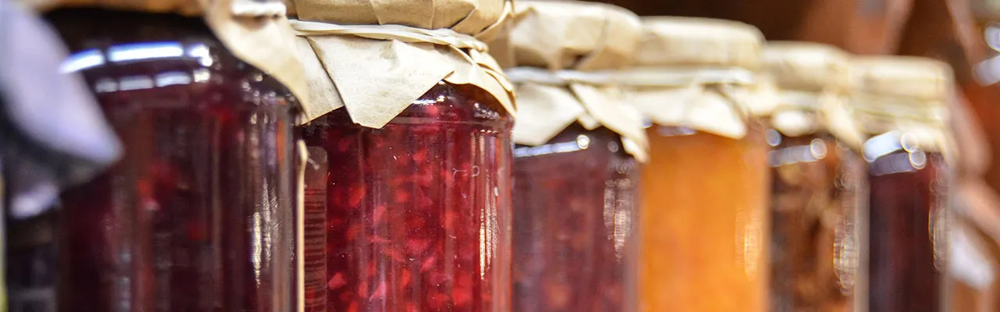

營養價值最高的水果
營養成分及加工產品
營養成分佔的百分比
碳水化合物：約 15 克
纖維：約 2 克
維生素 C：約 60 毫克（每日建議攝取量的 67%）
維生素 A：約 1800 微克（每日建議攝取量的 200%）
維生素 E：約 1.5 毫克（每日建議攝取量的 10%）
鉀：約 170 毫克（每日建議攝取量的 4%）
芒果加工產品
芒果乾：採用新鮮芒果製成，保持其甜美風味和營養成分。
芒果醬：用於甜點、麵包或其他料理的調味品，濃縮了芒果的香甜。
芒果汁：純天然芒果汁，富含維生素C和纖維，適合作為日常飲品。
營養成分及加工產品:
營養成分佔的百分比
碳水化合物：約 16 克
纖維：約 2 克
維生素 C：約 71 毫克（每日建議攝取量的 79%）
維生素 B6：約 0.1 毫克（每日建議攝取量的 8%）
鉀：約 176 毫克（每日建議攝取量的 4%）
葉酸：約 14 微克（每日建議攝取量的 4%）
荔枝加工產品:
荔枝乾：通過脫水技術保留荔枝的香氣和口感，是健康的零食選擇。
荔枝蜜：將荔枝與蜂蜜結合，製成美味可口的甜品調料，適合泡茶或烘焙使用。
荔枝果醬：以荔枝為主要成分製成，適合塗抹在麵包或作為甜點的配料。
營養成分及加工產品:
營養成分佔的百分比
碳水化合物：約 21 克
纖維：約 4 克
維生素 C：約 228 毫克（每日建議攝取量的 254%）
維生素 K：約 4.3 微克（每日建議攝取量的 4%）
鉀：約 400 毫克（每日建議攝取量的 9%）
葉酸：約 48 微克（每日建議攝取量的 12%）
番石榴加工產品:
健番石榴乾：保留番石榴的香甜和營養，適合作為零食或烘焙材料。
番石榴汁：富含維生素C和抗氧化劑，是健康的飲品選擇。
番石榴醬：濃縮番石榴的香甜口感，適合作為料理的調味品或甜點的配料。